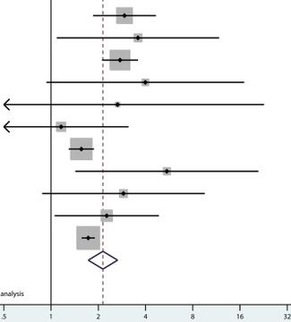
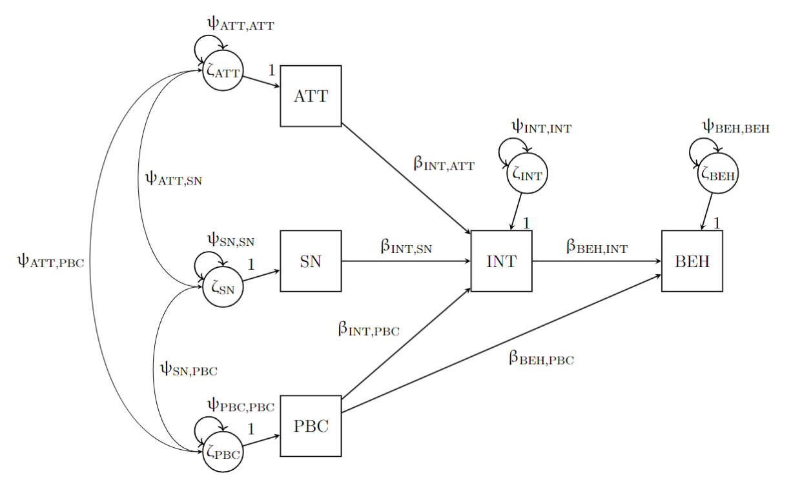

I wrote my dissertation as a PhD candidate in the research project 'No Data Left Behind: New meta-analytic structural equation models for complex data structures'. This project was funded through the VIDI grant awarded to Dr. Suzanne Jak. In this project, we aimed to broaden the scope of research questions that can be answered through meta-analytical structural equation modeling (MASEM). In particular, I investigated the possibilities of synthesizing raw datasets, instead of summary statistics, when conducting MASEM. Working on techniques for IPD MASEM, is an effort to allow researchers to synthesize these growing data archives to answer the most complex research questions.
In my current postdoctoral research position I work on the Media and Web Diets Observatory (a part of the Macroscope project), supervised by prof. dr. Theo Araujo and prof. dr. Jessica Piotrowski. In this project, I am again working with large heterogeneous data sets and thinking how these can be used to answer a wide range of research question. For the Observatory, we will be using data donation procedures to create a representative, longitudinal dataset of thousands of individuals, linking meso-level public debate and micro-level attitudes and behaviors to participants (social) media consumption. Future scholars and students can use this data to connect the dots between what we consume online and how attitudes and behaviors change over time.

